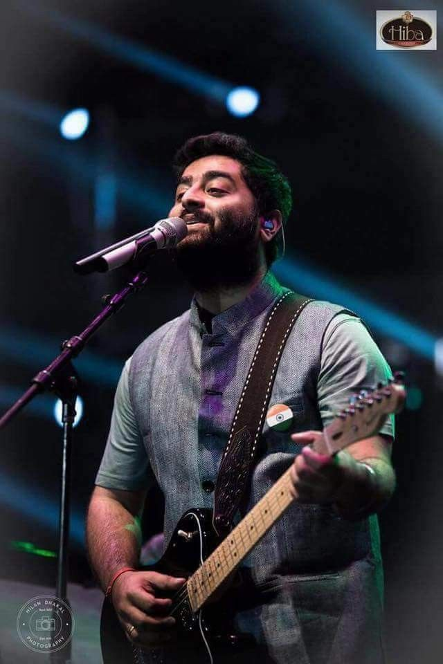

Introduction
Arijit Singh is an Indian singer, music composer, and music producer. He is known for his soulful voice and has won numerous awards for his music.
Biography
Arijit Singh was born on April 25, 1987, in Jiaganj, Murshidabad, West Bengal, India. He started his career in music as a contestant on the reality show Fame Gurukul in 2005. He gained popularity with his performances on the show and went on to work as a music programmer and playback singer in Bollywood movies. He has sung for numerous hit movies, including Aashiqui 2, Barfi!, Yeh Jawaani Hai Deewani, and Kabir Singh. He has won several awards for his music, including the Filmfare Award for Best Male Playback Singer.
Discography
- Arijit Singh - The Soulful Voice
- Ae Dil Hai Mushkil
- Barfi!
- Aashiqui 2
- Yeh Jawaani Hai Deewani
- Kabir Singh
Media
